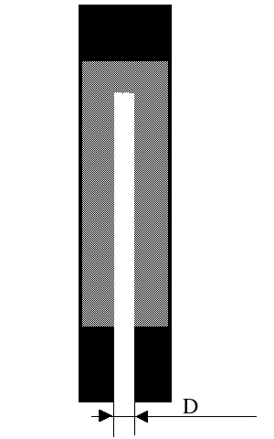

Примерный расчет двигателя
Если подходить по-взрослому, то расчет двигателя - достаточно умный процесс,
где трудно обойтись без специального софта. К тому же нужно многое знать.
Для такого расчета рекомендую скачать программу Rocki-Motor c
с сайта, который я
уже советовал.
Однако если речь идет о миниатюрных бумажно-деревянных порошковых двигателях, то можно
воспользоваться приблизительным расчетом:
Пусть диаметр сопла = D. Тогда:
Диаметр канала = D
Глухая часть заряда сверху = D
Внутренний диаметр двигателя = от 2.5 до 3.5 D
Длина канала внутри заряда = от 9 до 12 D
После этого следует провести ряд испытаний - проверить, как работает
двигатель, будучи закрепленным на земле. Проверьте, что двигатель не
разрывает и не вышибает сопло. Если такое происходит, рекомендуется
уменьшить длину канала и (как правило) всего двигателя. Можете поиграть
также с диаметром двигателя, уменьшив его.
Назад|На главную